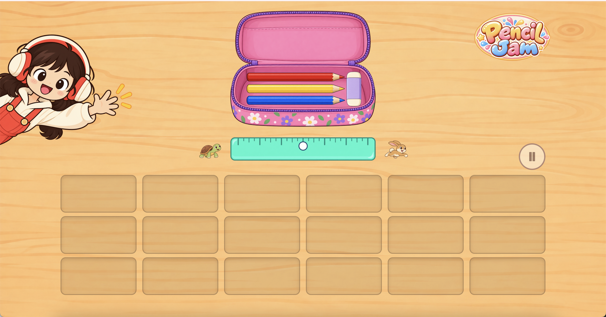
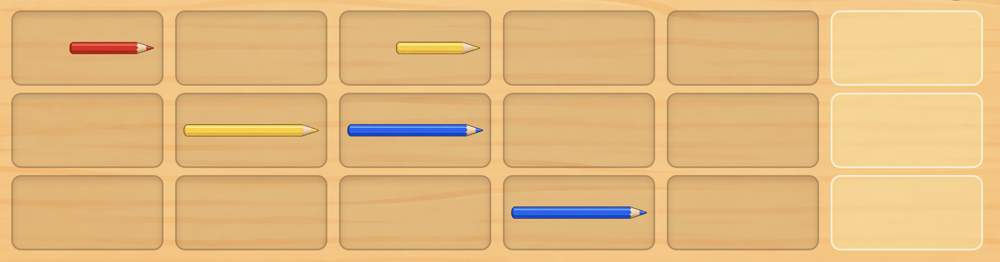
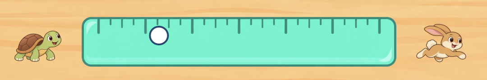
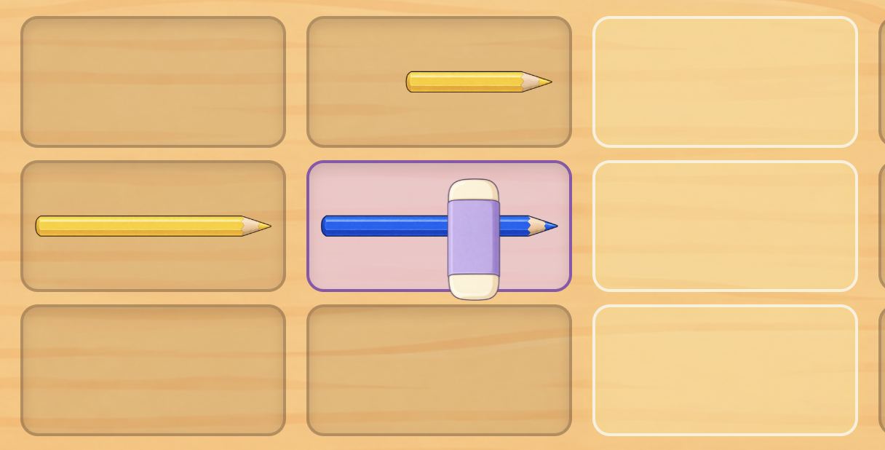

Pencil Jam
Link to My Project
Brief Synopsis
Pencil Jam is a browser-based interactive musical instrument that transforms a pencil case into a playful digital music-making tool. Users can drag pencils of different colors into sequencer slots to create musical rhythms, adjust the volume by changing the length of the pencils, control playback speed using a ruler, and edit their musical creations with an eraser. By turning familiar stationery into interactive musical controls, Pencil Jam encourages toddlers to explore sounds and create music through visual and hands-on interaction.
Scenario: Musical Toy for Toddlers
Design a way for young children with minimal language skills to explore music.
Browser based musical instruments offer users the ability to dynamically perform music and explore complex audio design. While these interactions allow for a depth of control, they can be intimidating for many adult users, let alone you children whose language skills are still developing.
Responses
Pencil Jam responds to the goal of this scenario by simplifying music creation for toddlers with developing language skills. Instead of relying on written instructions or complex musical controls, the game uses familiar stationery and direct mouse interactions to make music exploration more intuitive. Dragging and dropping pencils allows children to experiment with different sound combinations, while the ruler and eraser provide simple ways to modify their music. Visual feedback helps children understand the connection between their actions and the sounds they hear, encouraging independent exploration and creative play.
Core Interactive Features and Design System
1. Pencil Sequencer

Users can drag different colored pencils into a 3 × 6 music grid to create looping melodies. The three rows represent different pitches, and the sounds are generated using JavaScript, including drum-like and synthesized sounds. Clicking a pencil changes its length: longer pencils produce louder sounds, while shorter pencils produce quieter sounds.
Initially, I considered using pre-recorded sound effects, but during development, I found that the synthesized sounds reminded me of tapping pencils on a desk to create rhythms. I decided to keep these sounds because they fit the stationery theme and make music creation feel more playful. Using pencil length to represent volume also helps young children understand changes in sound without relying on numerical controls.
2. Ruler Speed Control & Spatial Input

Users drag the ruler horizontally to adjust playback speed. Moving left slows the music down, while moving right makes it faster. The new speed is applied when the mouse is released. This feature implements Spatial Input by mapping the mouse's horizontal position to the time interval between notes.
I chose a ruler to maintain the stationery theme, while the turtle and rabbit icons visually represent slow and fast speeds without requiring children to understand numerical settings. After user testing, I chose dragging as the interaction method because it feels more natural and resembles physically moving a ruler.
3. Eraser & Playback Controls

Users can drag the eraser onto the music grid to remove pencils and modify their melodies. The playback button allows them to pause the music and restart it from the first column.
I chose an eraser instead of a delete button to maintain the stationery theme and create an intuitive mapping between the familiar action of erasing and removing a sound. The playback control allows children to pause and listen to their creations again, encouraging them to experiment with different musical combinations.
4. Visual & Audio Feedback

Pencils and the eraser lift slightly and become highlighted when hovered over. During playback, the music grid highlights each column in sequence. The game also provides short voice prompts and encouragement to guide children through the experience.
The hover feedback finally decided to be added after user testing to make interactive objects easier to recognize. Voice guidance, however, was part of my original design plan because the target users are still developing their reading skills. Since I could not find a suitable free voice-over tool, I used code-generated speech instead. Together, these feedback mechanisms reduce reliance on written instructions and encourage children to keep exploring.
5. Design System
Pencil Jam is designed around a familiar children's desk environment, using a wooden desktop, a pink pencil case, colorful stationery and playful illustrations to create a warm atmosphere. The pencil case is positioned at the top, the ruler in the middle and the music grid at the bottom, creating a clear flow between selecting tools, adjusting speed and composing music.
I chose this visual approach to make music creation feel familiar rather than presenting children with a complex electronic instrument. Everyday stationery serves both a visual and functional purpose, helping children understand the controls through objects and actions they already recognize.
6. Responsive & Adaptive Design
This project uses CSS Media Queries to adapt to four screen-width categories: Medium, Expanded, Large and Extra-large. I tested the interface in Chrome and Firefox, adjusting the sizes and positions of the pencil case, ruler, music grid and decorative elements across different viewport widths. During testing, I encountered issues such as overlapping elements, unbalanced proportions and unclear interaction areas. I refined the layouts at different breakpoints to address these problems. In the end, all were successfully resolved.
Final Instrument Commit Log
-
Main branch with comment
Iterate and debugging A LOT
- hover lift effect
- add highlight
- prepare sound loop and set speed when drag ends
- dot css
- debugging
- dot css
- I found out I me mix up a3 and b3
- Merge remote-tracking branch 'origin/b2-drag-to-set'
-
fix pencil case be dragged bug
make this img can not be dragged in browser
-
refactor: move static images from JS to HTML
use html to manage them
- give eraser visual feedback same as pencil when hover on it
- start music playback when first pencil is placed
- add pause and play button
-
adjust the pause and play icon
make them in the exactly centre
- highlight current grid
- fix the sound and picture are out of sync after replaying bug
- change intro dialogue text
-
add turtle and rabbit icons as a represent of different speeds
and also adjust speed control's position a little
- opening dialogue decoration
- style: add responsive sizing for pencil case and ruler
- decoration
-
adjust medium size's media query
test in the FireFox and Chrome, than change some value to make it more suitable
- adjustment for expanded size
- adjustment for extra-large size
- add voice encouragement
- debug: The issue of image display size in large sizes has been resolved
- add some comments
-
debug:prevent ruler adjustment from restarting paused music
Updated the ruler's mouseup handler to preserve the current playback state